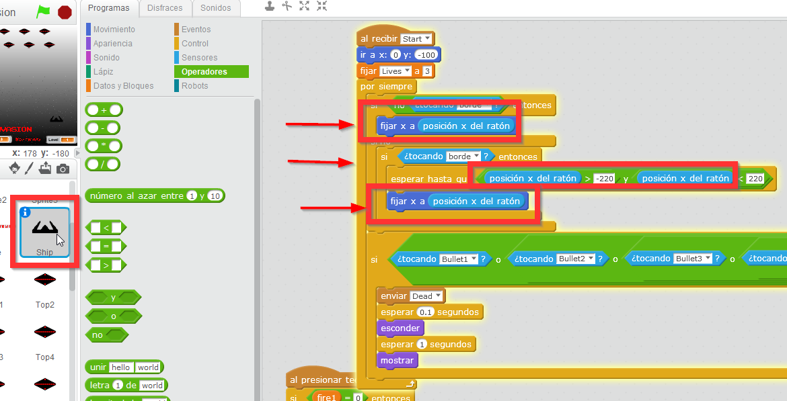
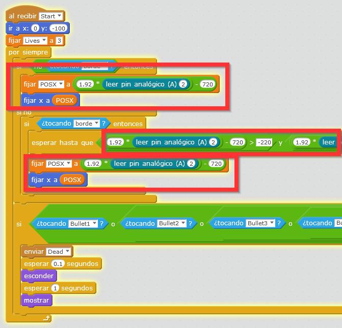
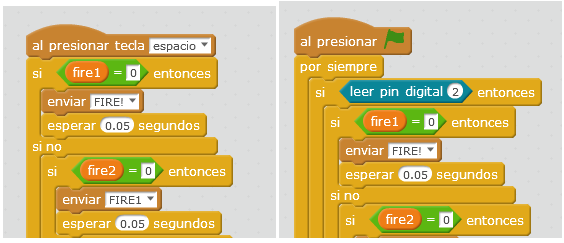
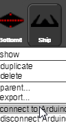

3.4.2 MONTAJE 10 MATA-ALIENS
Esta vez no vamos a ser originales, vamos a ser un poco vagos y nos vamos a copiar el programa de otra persona. La web de Scratch tiene un repositorio de millones de proyectos, podemos seleccionar uno, y adaptarlo a nuestra simpática Echidna.
RETO Vamos a ver un ejemplo con este proyecto https://scratch.mit.edu/projects/29744/. El reto que te lanzamos es que funcione la nave espacial con nuestro acelerómetro de la Echidna.
SOLUCION CON MBLOCK
En esta presentación se muestra cómo se importa un proyecto a mBlock:
Una vez importando nos fijamos en el código que hay que modificar, está claro que lo que hay que tocar es el Sprite “Ship” que es el que queremos mover con el acelerómetro y modificar el “posicionX que se realiza con el ratón y cambiarlo por el acelerómetro:

Perooo como siempre: la posición del ratón es la misma que las coordenadas de la pantalla de mBloc y la x va desde -240 hasta 240 y nuestro acelerómetro de A2 va desde 250 hasta 500 luego hacemos el cambio de escala con la HOJA DE CÁLCULO que ya lo hemos hecho con el helicóptero anteriormente:
Y cambiamos el código:

También vamos a cambiar el disparador “espacio” por pin digital 2 para disparar con el botón D2 del Echidna:

El resultado en este vídeo:
SOLUCIÓN CON SNAP4ARDUINO
Este programa vemos que va lento, RECOMENDAMOS que para la ejecución de proyectos grandes desde el ordenador Snap4Arduino va más rápido, por lo que vamos a ver esta alternativa:
Para importar un proyecto desde Scratch es un poco más complicado, ver esta presentación:
Los cambios en el código son los mismos que los anteriores.

Recuerda que en esta presentación se enseña cómo configurar Snap4Arduino para que se comunique con nuestro Arduino y la Echidna.
El programa lo puedes abrir en Snap4Arduino en esta URL
El Sprite que tienes que conectar con Arduino es la nave esa con cuernos.
El resultado lo puedes ver en este vídeo